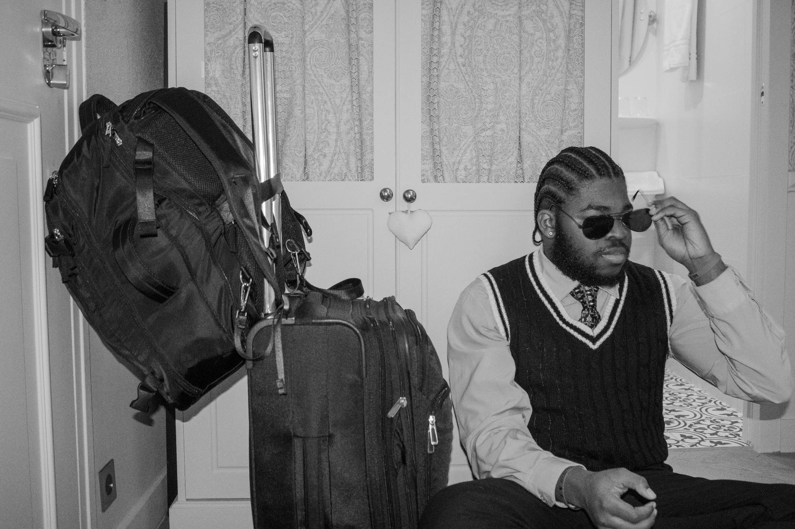

Nylas Burgess' Portfolio
Welcome to my digital portfolio! Explore my projects, exercises, and more about me.
Click to Cycle through 3 Profile Pictures!
About Me
Hello, my name is Nylas Burgess and I am a Senior at Fordham College at Lincoln Center(FCLC). I am studying New Media and Digital Design and History while on the Pre-Law Track. Originally, I grew up in Harlem, NY but I currently commute to school from Hackensack, NJ. On campus, I am the President of our Commuting Students Association at Lincoln Center(CSA). I have also been VP for our Black Student Allaince and an Orientation Captain. A fun fact about myself is that none of my top three favorite sports teams are based in New York.
NYC and New Jersey
Check out some of my photographs of New Jersey and Manhattan!
Chelsea FC
Check out some photographs of the Chelsea FC vs Tottenham Hotspur FC game I attended in London!
Photography
In the Fall 2024 semester, I took Introduction to Digital Photgraphy and I now love Photgraphy! Check out 50 photographs I took from my trip to Paris and London!
Exercises

Exercise 1
A introductory personal class website that would go on to inspire Project 4

Exercise 2
A Web Design interpretation of Ten Principle for Good Design by Dieter Rams

Exercise 3
Three Journal Entries: A Handmade Web by J.R. Carpenter, My Website is a Shifting House by Laurel Schwulst, Domain Naming by Chia Amisola

Exercise 4
An experimental, repsonsive website about the New Year's ball drop that changes across different screen sizes
Projects

Project 1: Favorite Book
A showcase of my favorite book and its impact on me

Project 2: ESPN Critique
A detailed analysis of the ESPN website's design and user experience

Project 3: 2016 NBA Finals Narrative
Reliving the story of the 2016 NBA Finals through interactive content

Project 4: Personal Digital Porttolio
It is this Site!